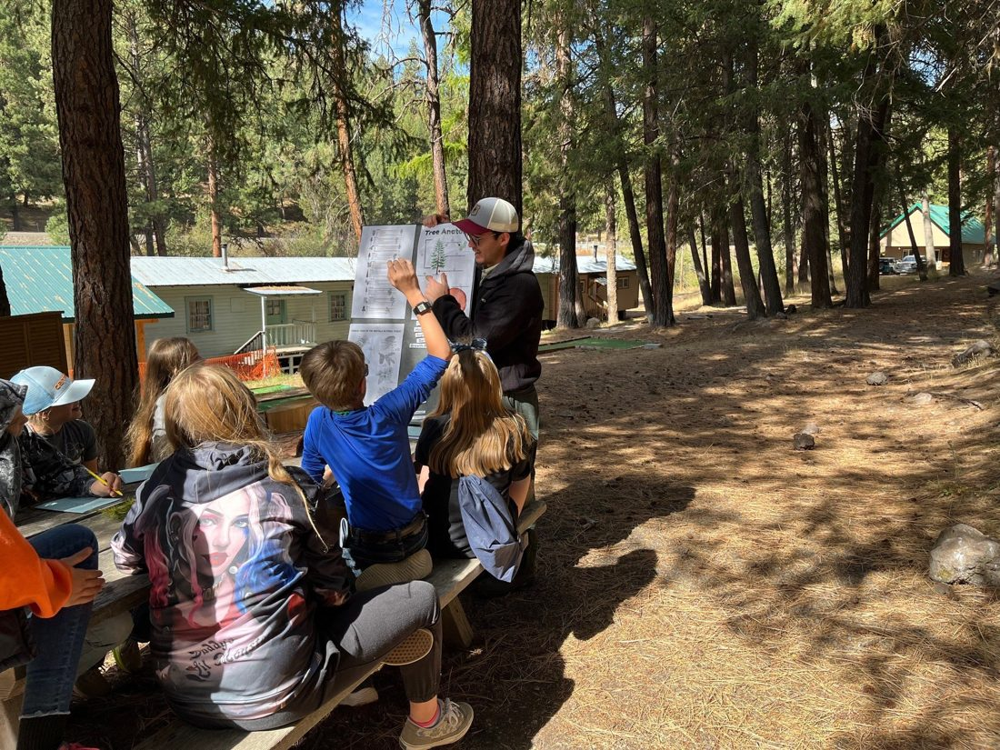
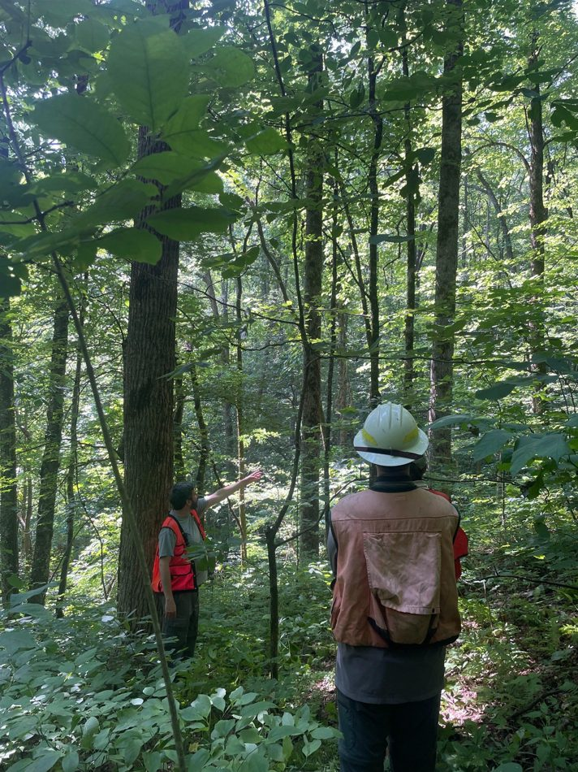
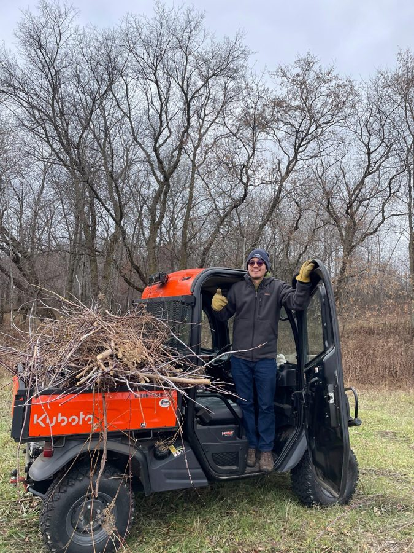
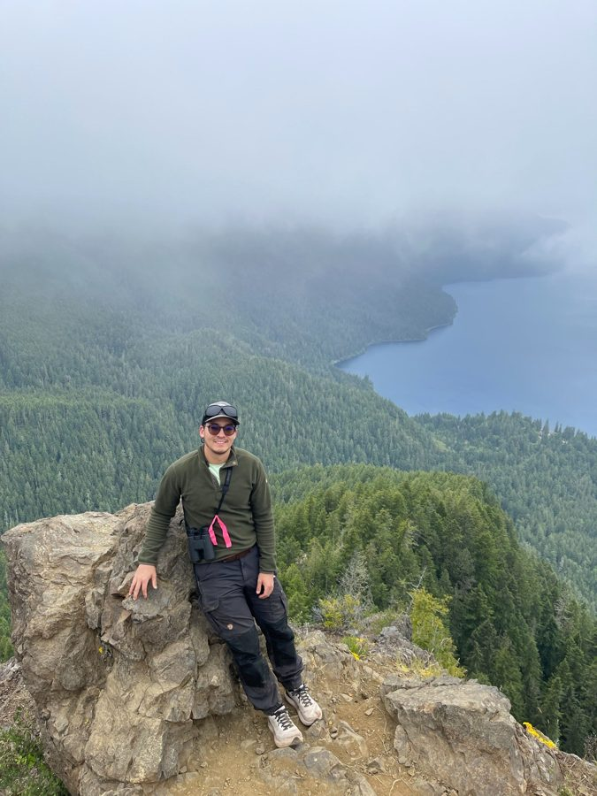

Education and engagement
Helping people connect technical information with stewardship practice.
Featured
A few examples of work that connect conservation, GIS, public communication, field grounding, and implementation.

Helping people connect technical information with stewardship practice.

Understanding conservation through watersheds, land use, economics, and practical decisions.

Seeing ecosystems, communities, field conditions, and management systems together.
Visual field notes
A broader conservation perspective comes from moving between field sites, working landscapes, research settings, and community-facing stewardship work.

